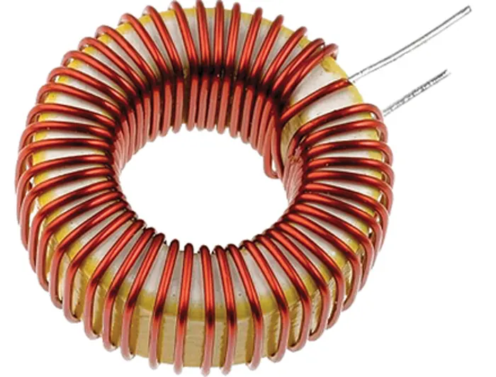
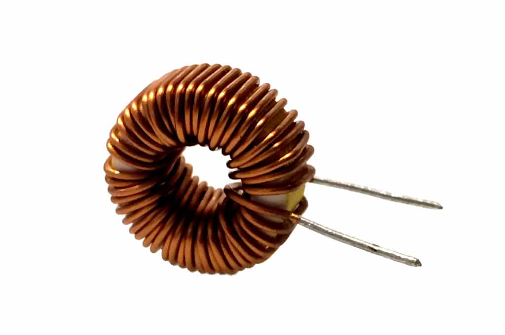
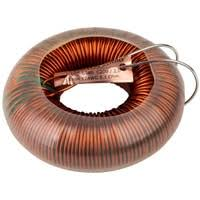
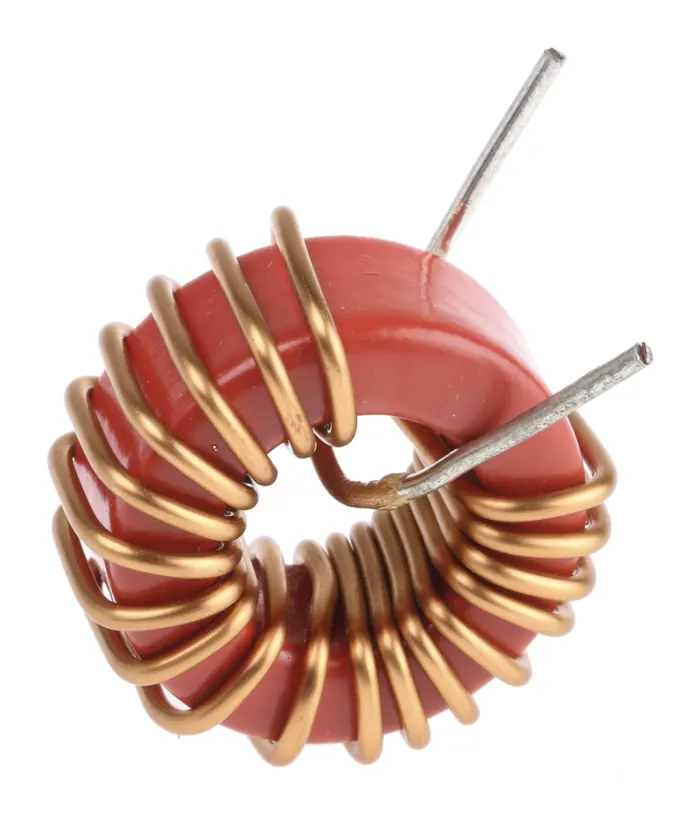
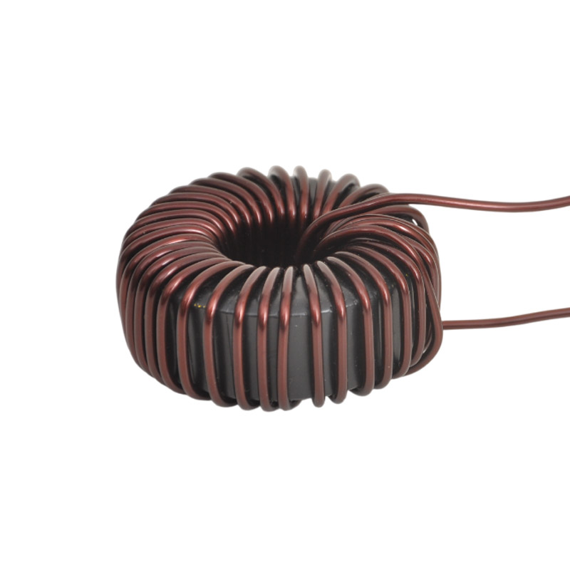

Welcome to ElectroSpecs | Explore Electronics Components | Learn & Build 🚀

POWER TOROIDAL INDUCTOR

RF TOROIDAL INDUCTOR

AUDIO TOROIDAL INDUCTOR

FERRITE TOROIDAL INDUCTOR

IRON POWDER TOROIDAL INDUCTOR